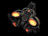
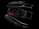
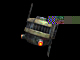
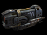

Oppressor
Role
Deploys and Targets Bombardment Weapons, uses the Violator beacon to bring down Orbital Strikes, can deploy a Tactical Shield for cover.
Specialty
Artillery support and Ammo re-supply
Weapons
Equipment
- Artillery Deploy tool
- Tactical Shield
- Violator Beacon
- The Targeting Tool
Deployables
 Plasma Mortar
Plasma Mortar Dark Matter Cannon
Dark Matter CannonInstructional info

Artillery Deploy tool:
To place an artillery deployable select the Deploy Tool from the weapon menu and press the "Mouse 1" button to activate the Deploy Tool. The camera will now pull into third person view and a colored wireframe outline of artillery deployable should be visible. If the deployable grid is red or yellow it means  the deployable cannot be placed in this location, move around the map and find a location where the placement grid is green. Once a green deploy location has been located press the Use Key ("Default F") to cycle through the available artillery deployables and then press "Mouse 1" button again to place the deployable. Once placed you can now rotate the deployable to point in the desired direction, the arrow that points away from the deployable is the direction the deployable will face once deployed. Press the "Mouse 1" button again to deploy.
the deployable cannot be placed in this location, move around the map and find a location where the placement grid is green. Once a green deploy location has been located press the Use Key ("Default F") to cycle through the available artillery deployables and then press "Mouse 1" button again to place the deployable. Once placed you can now rotate the deployable to point in the desired direction, the arrow that points away from the deployable is the direction the deployable will face once deployed. Press the "Mouse 1" button again to deploy.
 Remember: You can only deploy deployables in friendly territory.
Remember: You can only deploy deployables in friendly territory.

Tactical Shield:
The Tactical Shield allows the Oppressor to throw protection down anywhere on the battlefield or indoors for infantry cover. While weapon fire cannot penetrate the shields, friendly and enemy infantry can pass through them with no consequence. To activate the shields select Tactical Shield from the  weapons menu and use Mouse1 to deploy one or several.
weapons menu and use Mouse1 to deploy one or several.
The Tactical Shield can also be used to provide vital cover for Technicians to revive teammates or create Spawn Hosts, but can also be planted on Strogg vehicles or even around enemy turrets. Tactical Shields last for 40 seconds. A single GDF Frag Grenade will take it down, as long as it's right up against it.

Violator Beacon:
Beacons function like regular grenades but instead of exploding they release a signal indicating a location to destroy. After a few moments a beam from space will blast down leaving a trail of destruction. Ideal for softening up enemy defenses or stalling an enemy offensive.
Remember: The Oppressor Artillery and Violator Beacon share the same energy so you can only choose one type of bombardment at a time.
Unlike all the other Oppressor Artillery, enemy AIT’s can’t block your marker grenade/beacon, in fact the only possible way to counteract it is to go prone on it or drive a vehicle over it, hiding it from your enemy’s Close Air Support/Orbital Bombardment observers. So it may be worth keeping Fire pressed to cook off the grenade/beacon, giving the enemy less time to find and cover it.

Targeting Tool:
Once Artillery has been placed find an elevated position looking down on an area you would like to bombard (ideally an area occupied by enemies). Select the Targeting Tool from the weapon menu and toggle the Targeting Tool with the Mouse1 button. Place the crosshair on the desired location and hold Mouse1 until the area is locked on and the artillery bombardment will do the rest.
If you are using a Plasma Mortar bombardment you can move the bombardment target in real time as the bombardment is raining in by continuing to hold Mouse1 and point the laser guided Targeting Tool to the new desired target. In addition to real time Plasma targeting, the Targeting Tool can lock-on to enemy vehicles and Plasma will home in and destroy the targeted vehicle.
Stroyent Allocation:
Strogg infantry have the unique ability to allocate their Stroyent supplies from their weapon to their health and vice versa [ - / + Default Keys]. This ability is extremely useful when you are about to die or when you are out of ammo. Keep in mind that you loose a fraction of Stroyent with every conversion.
Grenades:
- All grenades can be thrown slightly further by holding down the Fire key [Mouse1 Default].
- Strogg grenades have an alt fire option [Mouse2 Default] which makes them a sticky grenade sticking to walls and or vehicles.
- You can also use your grenades to harmlessly explode GDF mines.